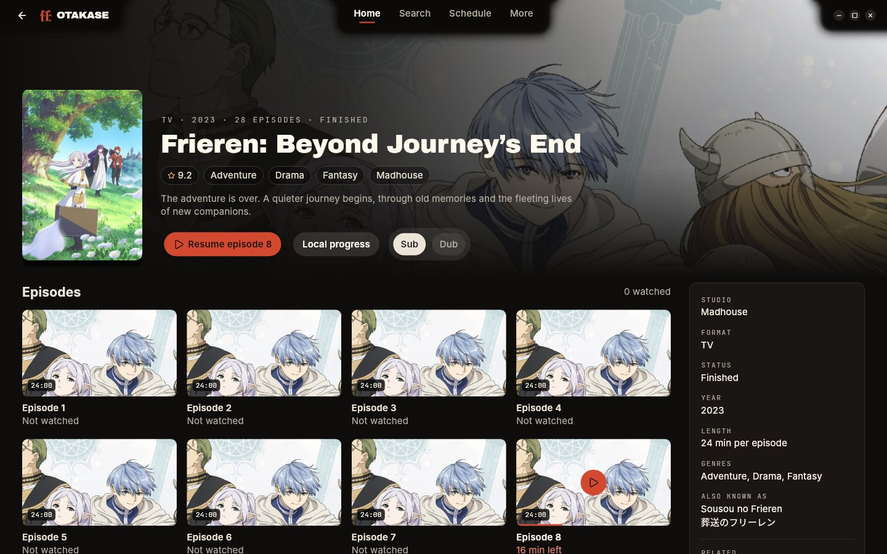
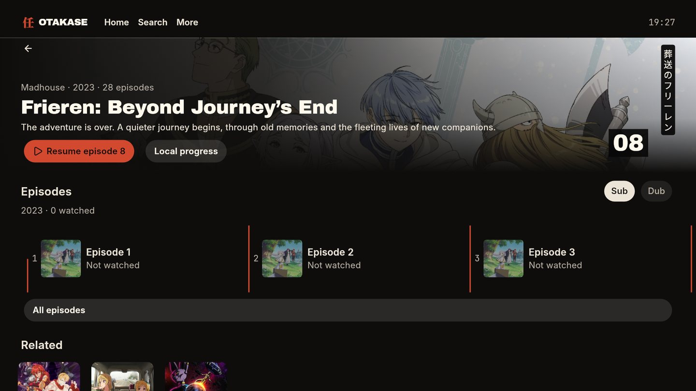
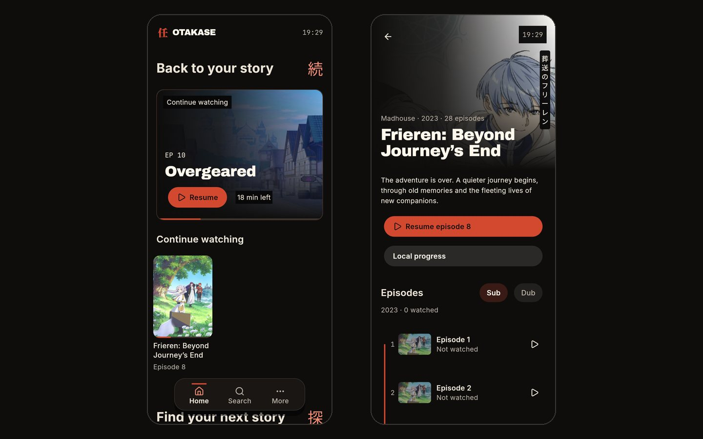
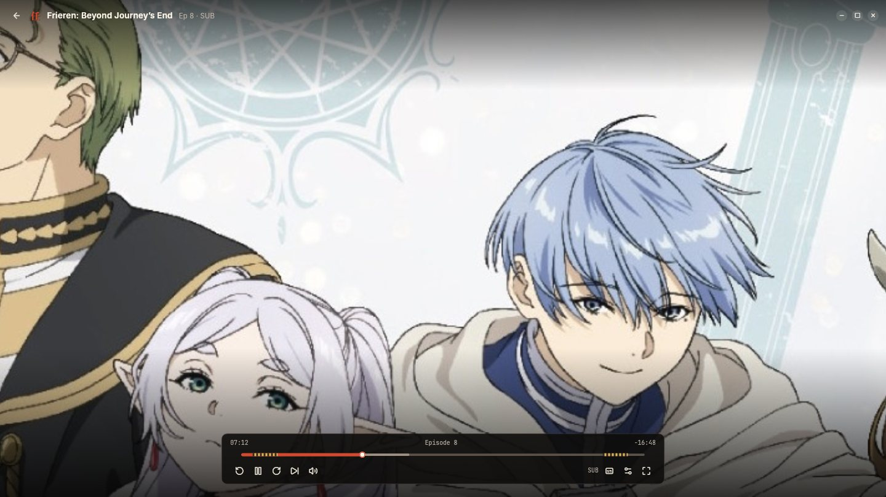
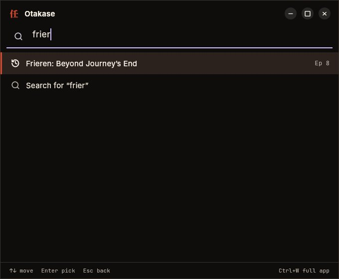

お任せ · LATEST RELEASE
Otakase finds the episode, plays it, skips the opening and keeps AniList or MyAnimeList in sync. On your phone, your TV and your computer. Free and open source.
DOWNLOAD →It tries the sources for you and remembers what worked. No site hopping, nothing else to install.
Openings and endings skipped automatically or one press away, and filler episodes left out.
AniList, MyAnimeList or both. Your progress updates when the episode ends.
Android TV with the remote, sign-in with your phone, and your phone as a remote.
Stop on the phone, carry on mid-episode on the TV or the computer.
Dressed in the vermilion of a torii gate, with Continue Watching, Up next and the week's schedule up front.
How it works
Your list opens first, with the show you stopped halfway at the top. Or type to search any title.
Otakase finds a working source, picks sub or dub, and starts the episode where you left it.
When the credits roll your list is updated, and the next episode is one click away.
A look inside





Everywhere
The same Otakase on each of them, with your list, your place in the episode and your settings. It updates itself.
Questions
Yes. Otakase is open source under the GPL-3.0, with no ads, no accounts of its own and nothing to pay for.
No. It is a player front end: it finds episodes that are already public on the web and plays them. Nothing is uploaded or stored by the project.
No. Without one your progress stays on the device. You can sign in to AniList, MyAnimeList or both whenever you like.
Nothing. The app brings its own player on every system.
Yes. With AniList or MyAnimeList, Otakase keeps the minute you stopped at with your list, so another device picks up mid-episode.
It is being retired in favour of the app; v26.7.0 is the last release that carries it. Your list and watch positions carry over by themselves.
One app for phones and Android TV, Android 7.0 or newer. Android asks once to allow installing apps from your browser or file manager. Later updates install from More > About & updates.
Installs for your user only, no administrator needed, and adds Otakase to the Start menu.
Unzip and move Otakase to Applications; it runs on Apple Silicon and Intel. It is not signed by Apple yet, so the first time, right-click it and choose Open.
chmod +x otakase-app-linux-x86_64.AppImage
./otakase-app-linux-x86_64.AppImageRuns on any x86_64 distribution, with its player inside. Start it with --launcher for a small keyboard menu you can bind to a shortcut.